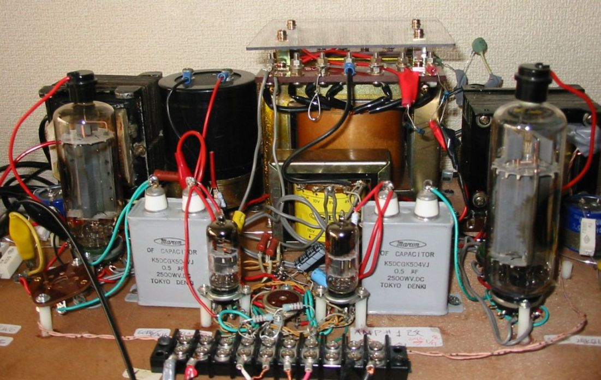
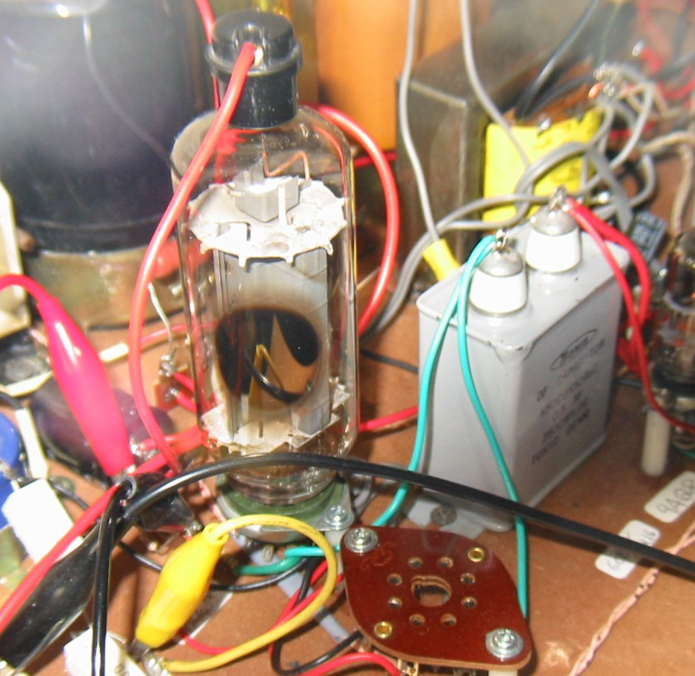
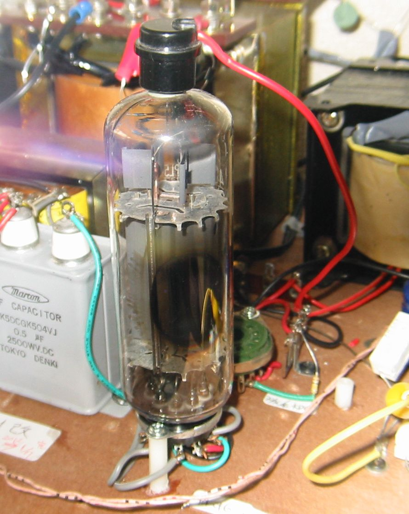

真空管試験機/アンプについて
大型のテレビ水平出力管を試験できるよう、400V程度のB電圧、40Vまでのヒーター電圧、コンパクトロン管、マグノバー管、GT管の
ソケットを備え、かつ十分な信号ドライブを与えられるよう５極管(6AU6/6CB6)によるドライバーを用意しました。バイアスは私の趣味
で、カソードバイアスを使用しています。これはクリップコードで抵抗を短絡して、値を変えられるようにしてあります。
今現在は、左側36/40KD6と右側40KG6Aの非対称ステレオアンプとなっていますが、左側のGT管ソケットでは36LW6と26HU5が、
右側の40KG6Aの後ろにあるコンパクトロンソケットでは42KN6が試験できるようになっています。
その他に、OPTも自作の不ぞろいなものですが、結構音楽を楽しみながら、真空管の試験ができます。
電源電圧は、もっと高いものが欲しかったのですが、ちょうどよいトランスがなくて、この上は600Vになってしまうので、TV球の試験用には
これで良しとしましょう。

36/40KD6、3結での実験データ

メーカー不明JUNK管；＋B=400V、Ep=Esg(SGには100オームの抵抗を直列に挿入)、Rk＝9200Ω、Ik=86mA、Isg=2.3mA；この場合Ep=320Vとなり、
Pp=27.5W、Psg=0.74Wとなります。
電圧は規格の900V/200Vに対して、SG電圧が120Vオーバーしていますが、損失電力は規格の33W/5.0Wに対して全く問題ありません。
この球はμ２の値が発表されており4.0となっています。これは2A3や300Bとほとんど同じ値ですが、40KG6Aについては何も発表されていません。
しかし、6KD6系の球と同じようなバイアス電圧になるので、似たようなものであることは推定できます。
自己バイアスによる電力損失は、約22％で少なくはありませんが、自己安定性があり、球を交換したときの調整もいらないので、
頻繁に球をいじる私には向いています。
(10/03/2012）
40KG6A/PL509、3結での実験データ

メーカー不明JUNK管；＋B=400V、Ep=Esg(SGには100オームの抵抗を直列に挿入)、Rk＝9200Ω、Ik=90mA、Isg=2.7mA；この場合Ep=320Vとなり、
Pp=28.8W、Psg=0.86Wとなります。
電圧は規格の700V/275Vに対して、SG電圧が45Vオーバーしていますが、損失電力は規格の30W/7Wに対して全く問題ありません。
この規格はデザインセンターで、デザインマックスでは40W/9Wです。このほか3極管接続時の許容損失電力はデザインセンターで31W、
デザインマックスでは42Wと示されています。プレート許容損失電力＋スクリーングリッド許容損失にはならないことに注意してください。
(10/03/2012）
40W以下でもプレートが赤くなるといわれている40KG6Aの耐電力損失を暗い部屋で目で確認しました。
2本のサンプルを実効プレート電圧300Vで、カソード抵抗を520Ωまで下げてみると、
#1；Ik=130mA、入力40Wで片側のプレート翼が赤くなる。
#2；Ik=144mA、入力42Wで片側の翼の下半分が赤くなった。
ということで、デザインマックスの42W入力時には、プレートの一部が赤くなるようです。一方このときの管璧温度はというと、サーミスタ
温度計で最大167℃でした。規格は管壁温度は最も高いところで300℃となっているので、赤くなった=危ないというわけではなさそうです。
比較のために、反対側に挿してあった30KD6のIkを140mAまで増やし42W入力としましたが、プレートが赤くなるようなことはありません。
見かけ上はKD6系の球は強いと見えるかもしれませんが、これは同じ条件で長時間使用してみないとわかりません。
(11/03/2012）
back to top
back to home page